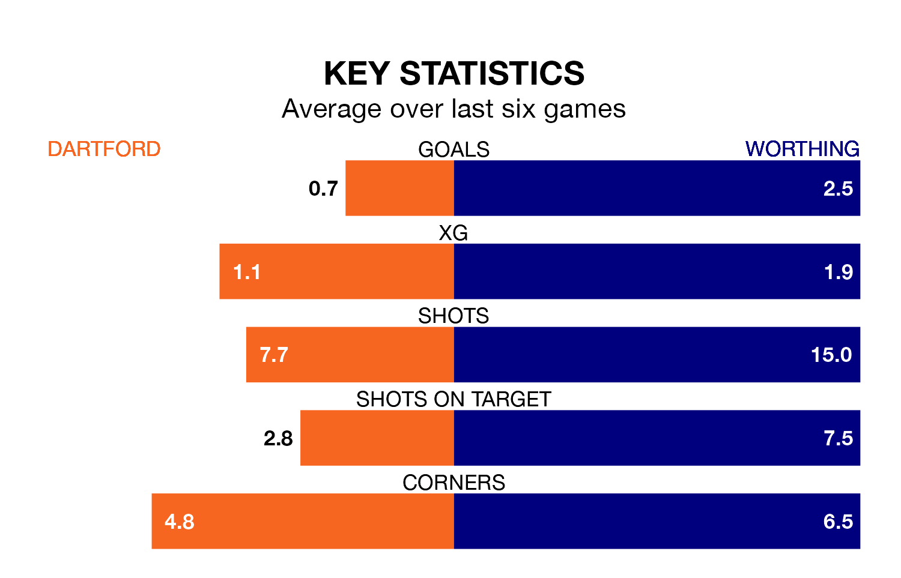

Struggling Dartford face Worthing at Princes Park on Tuesday looking to build on a win in their last league outing.
After securing all three points with a 2-1 victory over Havant and Waterlooville on Saturday, the Darts sit 21st in the National League South.
They travel to play a Worthing side fifth in the standings, who also won their last match, 3-1 against Yeovil Town.
With 94 goals in 43 games so far this season, Worthing are the league's highest scorers with 2.2 goals per game. But they are conceding more than average too, letting in 67 goals at a rate of 1.6 per game.
Dartford, meanwhile, are below average scorers, with 1.2 goals per game, compared to a league average of 1.4. They have conceded 1.6 goals per game.
The Darts are in disappointing form in the National League South, with one win and two draws from their last six games.
With three wins and a draw over that period, the away side's form is better – they have taken 10 points from 18, compared to the hosts' five.
In the last three years, Dartford and Worthing have played each other on three occasions. Dartford won one of them and Worthing the other.
Their last meeting was on November 14, when Dartford won 4-3 away.
Updated: 14:47 (UTC), 09/04/24